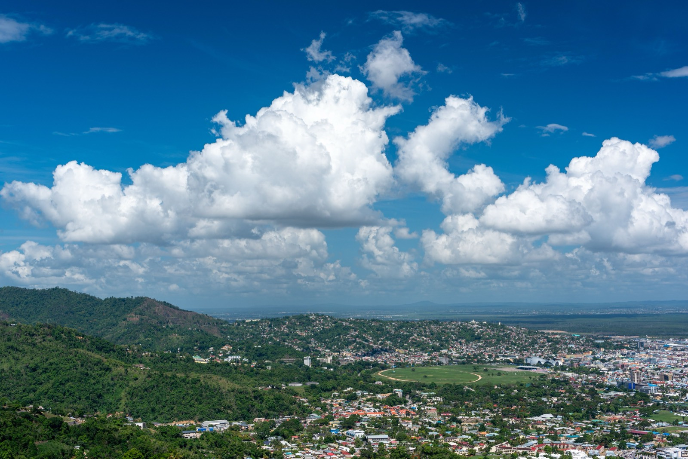
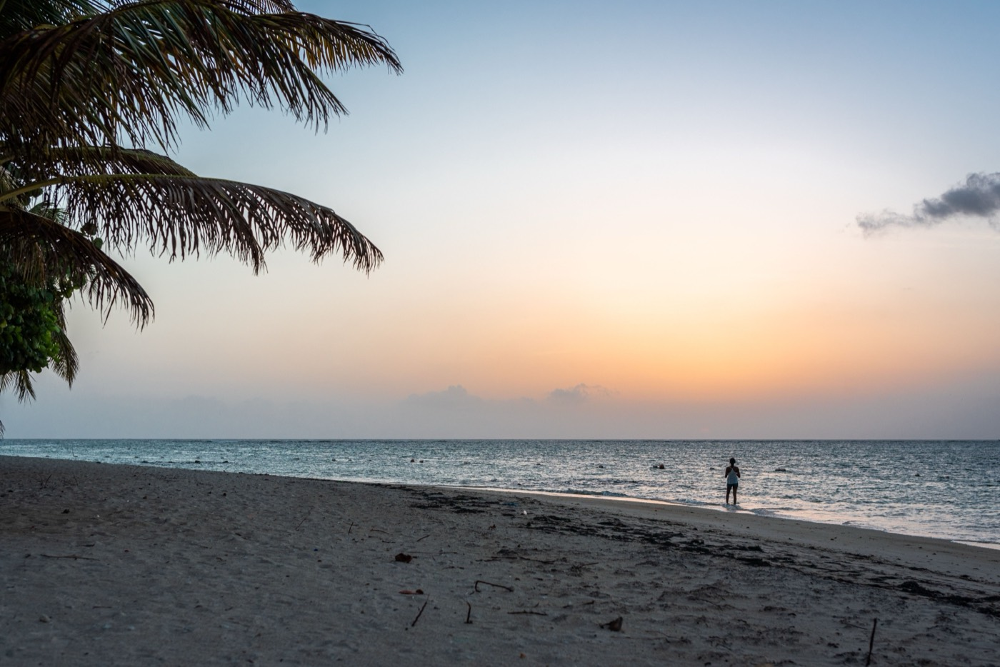

Moving to Trinidad & Tobago in 2026
The Caribbean's oil-rich, English-speaking twin-island republic — substance over resorts, outside the hurricane belt, and cheaper than the US — but with a real crime picture you must plan around. The honest guide.

Trinidad & Tobago is the Caribbean's outlier: not a resort economy but an oil-and-gas one — the region's largest energy producer, a stable English-speaking republic with real economic substance, and, usefully, one that sits at the southern edge of the hurricane belt and is rarely hit. It's cheaper than the US and rich in culture (this is the birthplace of Carnival and steelpan). The honest caveat is safety: crime is a genuine consideration, and where you live matters more here than almost anywhere.
Who it's for
T&T isn't set up for easy retiree or nomad relocation — there's no retiree visa and no digital-nomad visa, and work permits need employer sponsorship. It suits energy/finance/IT professionals with a job offer, affluent retirees who can afford private insurance and secure housing, and well-paid remote workers who choose their neighborhood carefully.
Is Trinidad & Tobago safe?
This is the headline consideration. The country carries an elevated US advisory because crime — including gang violence — is real, but it's concentrated in specific urban areas that expats avoid. Established expat neighborhoods (Westmoorings, Maraval, St Clair, Woodbrook) are considerably safer, and Tobago is significantly safer than Trinidad. Most expats live comfortably with the formula “good neighborhood + secured home + prudent habits”: gated/patrolled housing, driving rather than walking at night, and low visible wealth.
Cost of living
Roughly 30–45% below major US cities, on a two-tier pricing system where expats pay more than locals. A moderate lifestyle runs about $1,875/month (a comfortable one closer to $2,900); families with international schooling should budget $5,000+.
Residency & work permits
US/Canada/UK/EU citizens enter visa-free for 90 days (extendable). Long-term status runs through employer-sponsored work permits or business-investment residency; permanent residency is possible after 5 years and citizenship after 8, with dual citizenship allowed.
Taxes & hurricanes
No wealth, inheritance, or gift tax, and tax treaties (US/Canada/UK) help avoid double taxation. A real bonus: T&T sits at the southern edge of the hurricane belt and is rarely hit directly (the last major strike was 1963) — though wet-season flooding occurs.
Healthcare
A two-tier system: free public care plus faster private hospitals (concentrated in Port of Spain). Private health insurance ($100–$250/month) is strongly advised, and complex cases often fly to Miami (~3.5 hours).
Where expats actually live

The expat community centers on the safer west of Port of Spain — Westmoorings, St Clair, and Maraval — with strong social networks. Many choose Tobago outright for its calmer, safer, beach-focused pace.
Is Trinidad & Tobago right for you?
- Great fit if: you have an energy/finance job or business, want an English-speaking, hurricane-safe Caribbean base with real culture, and will invest in a secure neighborhood.
- Think twice if: safety anxiety would dominate daily life, or you want an easy retiree/nomad visa and turnkey move.
Relocating is step one. Owning the home is step two.
SORA designs and builds homes across the tropics — with our deepest roots in Panama and Costa Rica, where residency is straightforward and building costs a fraction of the coastal Caribbean. If your move is really about a place of your own in the sun, it is worth seeing what a fixed-price build looks like before you commit to any one island.
Frequently asked questions
Is Trinidad and Tobago safe?
Safety is the key consideration. The country carries an elevated US travel advisory because crime, including gang violence, is real — but it's concentrated in specific urban areas that expats avoid. Established expat neighborhoods (Westmoorings, Maraval, St Clair) are considerably safer, and Tobago is significantly safer than Trinidad. Most expats live comfortably with secure housing and prudent habits.
How much does it cost to live in Trinidad and Tobago?
Roughly 30–45% below major US cities, on a two-tier pricing system where expats pay more than locals. A moderate lifestyle runs about $1,875/month, a comfortable one closer to $2,900, and families with international schooling should budget $5,000+.
How do you get residency in Trinidad and Tobago?
There's no retiree or digital-nomad visa. US/Canada/UK/EU citizens enter visa-free for 90 days (extendable); long-term status comes through employer-sponsored work permits or business-investment residency. Permanent residency is possible after 5 years and citizenship after 8, with dual citizenship allowed.
Is Trinidad and Tobago in the hurricane belt?
It sits at the southern edge and is rarely hit directly — the last major hurricane strike was Flora in 1963. Wet-season flooding and tropical storms occur, but hurricane risk is dramatically lower than in Jamaica, the Bahamas, or the Dominican Republic.
Sources & verification
Figures in this guide were checked against primary and authoritative sources on 27 July 2026. Immigration, tax, and cost figures change — always confirm the current rules with the official body or a licensed professional before acting.
- T&T Immigration Division — official residency & work-permit authority
- US State Department — Trinidad & Tobago — travel advisory (crime)
- T&T Board of Inland Revenue — official tax authority